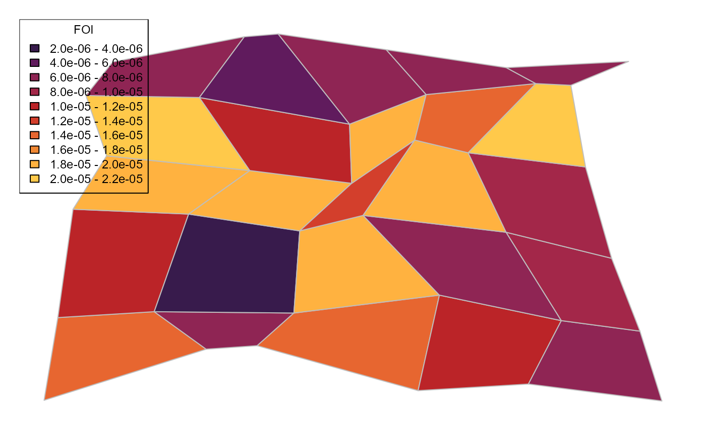
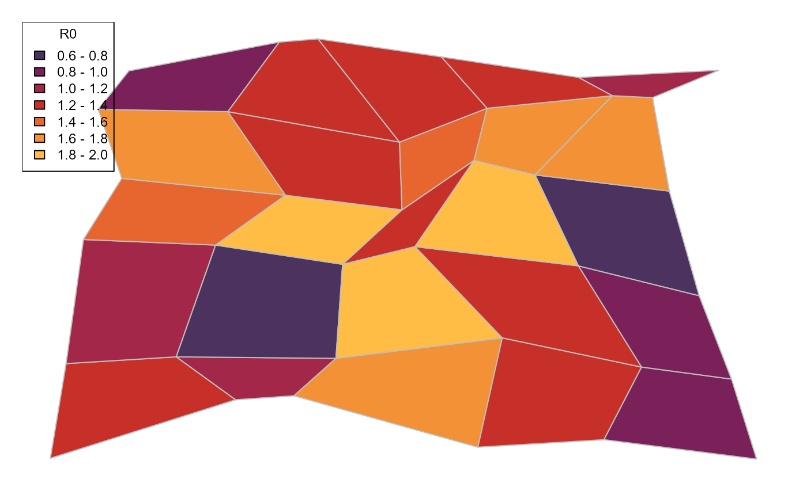

Guide 2 - Calculating Parameters From Environmental Data
CGuideBParametersEnvironment.RmdThis vignette demonstrates how the package generates values of epidemiological parameters (the force of infection for spillover from the sylvatic reservoir and the basic reproduction number for human-to-human transmission) from environmental covariates (including population, vegetation coverage, temperature suitability for yellow fever-carrying mosquitoes and non-human primate species richness). This approach is used to calculate epidemiological parameter values for a set of regions with known values of environmental covariates from a single set of coefficients.
For more information and background on the use of environmental covariates and the selection of covariates for use, see The global burden of yellow fever (Gaythorpe et al, 2021, eLife).
Environmental data is stored as a data frame with each line containing covariate values for one region, with the headings giving the variable names. In this imaginary example, the environmental covariates are simply named Var1-5.
library(YellowFeverDynamics)
enviro_data <- read.csv(file = paste(path.package("YellowFeverDynamics"),
"/exdata/enviro_data_example.csv",
sep = ""), header = TRUE)
head(enviro_data, 5)
#> region temp_mean rainfall vector_i nhp_i landuse_i
#> 1 IGL01 23.04530 845.9884 7 3 6
#> 2 IGL02 23.23389 1317.4198 3 2 5
#> 3 IGL03 20.96704 1605.9723 7 4 4
#> 4 IGL04 22.32759 1087.6587 8 5 3
#> 5 IGL05 21.36903 1323.8002 2 1 4Logarithmic values of the coefficients of the environmental covariates are stored as a data frame with the headings in the format FOI_(variable name) and R0_(variable name). In the example below, only one set of coefficient values are given, but multiple sets of coefficient values (e.g. a distribution of value estimates) can be used to produce a distribution of epidemiological parameter values, as shown below.
enviro_coeffs <- read.csv(file = paste(path.package("YellowFeverDynamics"),
"/exdata/enviro_coeffs_example.csv",
sep = ""), header = TRUE)
enviro_coeffs
#> FOI_temp_mean FOI_rainfall FOI_vector_i FOI_nhp_i FOI_landuse_i R0_temp_mean
#> 1 1.85e-08 7.66e-10 6.04e-08 3.89e-06 2.2e-07 0.00903
#> R0_rainfall R0_vector_i R0_nhp_i R0_landuse_i
#> 1 0.000269 0.0315 0.163 0.023Covariate and coefficient values can be combined to produce values of the spillover force of infection and basic reproduction number using the param_calc_enviro() function.
n_regions <- nrow(enviro_data)
epi_data <- data.frame(region = enviro_data$region, FOI = rep(NA, n_regions),
R0 = rep(NA, n_regions))
for(n_region in 1:n_regions){
FOI_R0_values <- param_calc_enviro(enviro_coeffs = enviro_coeffs[1, ],
enviro_covar_values = enviro_data[n_region,c(2:ncol(enviro_data))])
epi_data$FOI[n_region] <- FOI_R0_values$FOI
epi_data$R0[n_region] <- FOI_R0_values$R0
}
head(epi_data, 5)
#> region FOI R0
#> 1 IGL01 1.448717e-05 1.2831700
#> 2 IGL02 1.050017e-05 1.0996880
#> 3 IGL03 1.848087e-05 1.5858389
#> 4 IGL04 2.183941e-05 1.6301983
#> 5 IGL05 6.300158e-06 0.8670647Spillover FOI and R0 data obtained in this way can be plotted on a map of the regions under consideration using the create_map function(), as can other regional data such as the values of the environmental covariates. Regional boundary data is loaded from one or more shapefiles of the format used by GADM using the map_shapes_load() function
regions=epi_data$region
shape_data <- map_shapes_load(regions, shapefiles=c(paste(path.package("YellowFeverDynamics"),
"/exdata/shapefile_example.shp", sep = "")),
region_label_type="GID_1")
colour_scheme=readRDS(file=paste(path.package("YellowFeverDynamics"),
"/exdata/colour_scheme_example.Rds", sep="/"))
colour_scale=colour_scheme$colour_scale
null1 <- create_map(shape_data, epi_data$FOI, scale=pretty(epi_data$FOI, 8),
colour_scale, pixels_max=720, text_size=0.75, map_title="",
legend_title="FOI", legend_position="topleft", legend_format="e",
legend_dp=1, output_file=NULL)
null2 <- create_map(shape_data, epi_data$R0, scale=pretty(epi_data$R0, 8),
colour_scale, pixels_max=720, text_size=0.75, map_title="",
legend_title="R0", legend_position="topleft", legend_format="f",
legend_dp=1, output_file=NULL)
To generate a distribution of spillover FOI and R0 values for each region, a distribution of environmental coefficient values can be used:
enviro_coeffs2 <- read.csv(file = paste(path.package("YellowFeverDynamics"),
"/exdata/enviro_coeffs_example_multi.csv",
sep = ""), header = TRUE)
head(enviro_coeffs2, 5)
#> FOI_temp_mean FOI_rainfall FOI_vector_i FOI_nhp_i FOI_landuse_i R0_temp_mean
#> 1 1.85e-08 7.66e-10 6.04e-08 3.89e-06 2.20e-07 0.00903
#> 2 1.34e-08 7.26e-10 5.09e-08 4.97e-06 2.40e-07 0.01160
#> 3 2.05e-08 9.15e-10 4.76e-08 4.07e-06 2.16e-07 0.00760
#> 4 2.29e-08 6.42e-10 6.98e-08 2.88e-06 1.54e-07 0.00892
#> 5 1.40e-08 8.24e-10 6.14e-08 3.67e-06 1.70e-07 0.00991
#> R0_rainfall R0_vector_i R0_nhp_i R0_landuse_i
#> 1 0.000269 0.0315 0.163 0.0230
#> 2 0.000190 0.0353 0.161 0.0169
#> 3 0.000275 0.0313 0.176 0.0290
#> 4 0.000190 0.0275 0.205 0.0204
#> 5 0.000336 0.0369 0.146 0.0235
n_values=nrow(enviro_coeffs2)
epi_data <- list(FOI = array(NA, dim = c(n_values,n_regions)),
R0 = array(NA, dim = c(n_values,n_regions)))
for(n_value in 1:n_values){
for(n_region in 1:n_regions){
FOI_R0_values <- param_calc_enviro(enviro_coeffs = as.numeric(enviro_coeffs2[n_value, ]),
enviro_covar_values = enviro_data[n_region, c(2:ncol(enviro_data))])
epi_data$FOI[n_value,n_region] <- FOI_R0_values$FOI
epi_data$R0[n_value,n_region] <- FOI_R0_values$R0
}
}